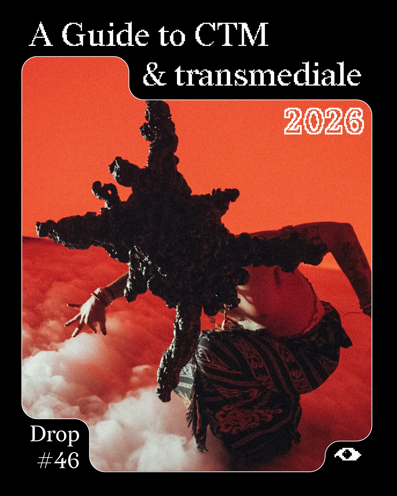
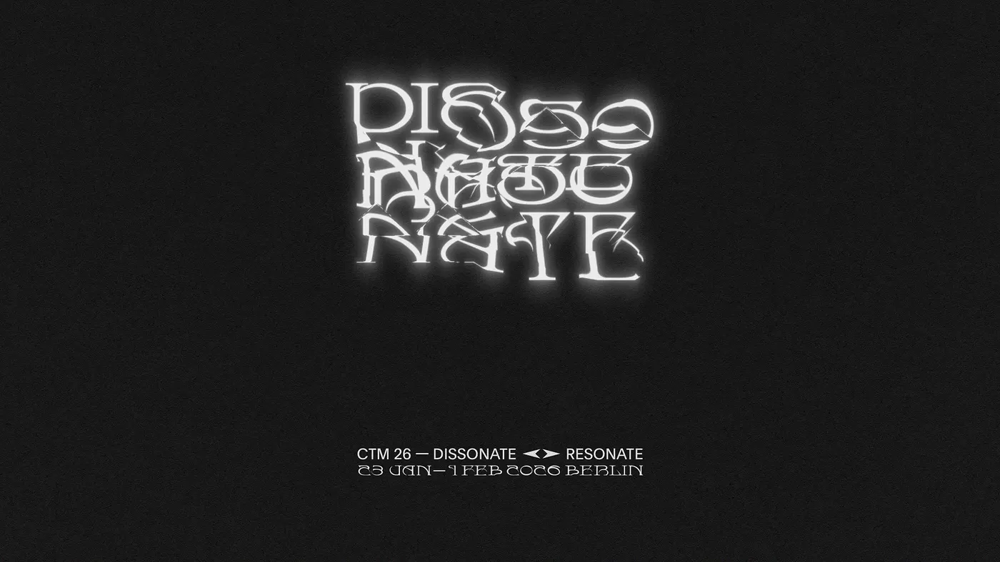
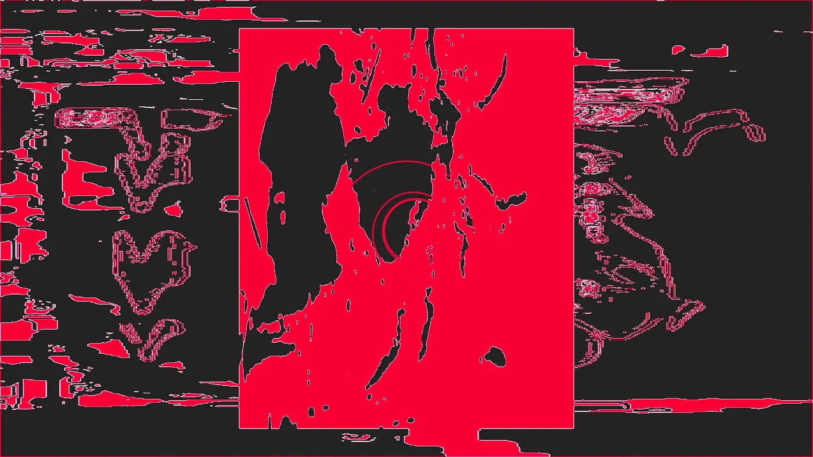
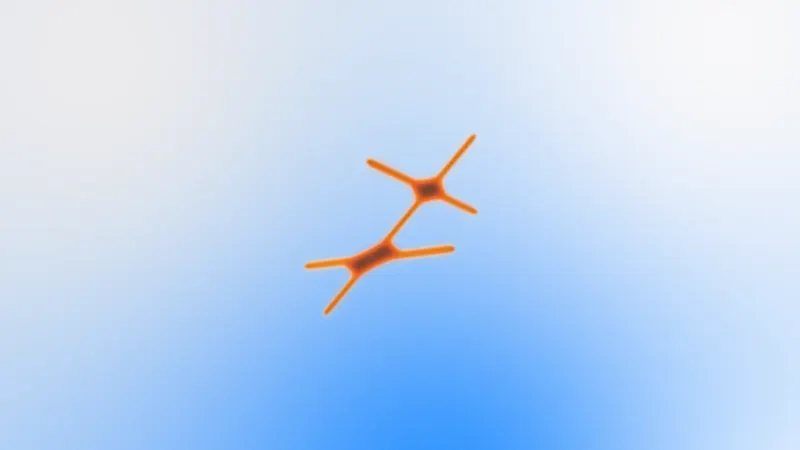
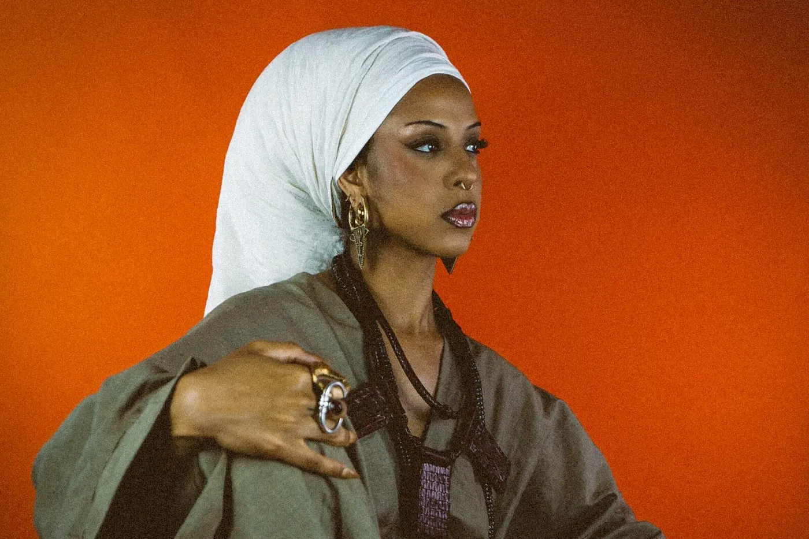
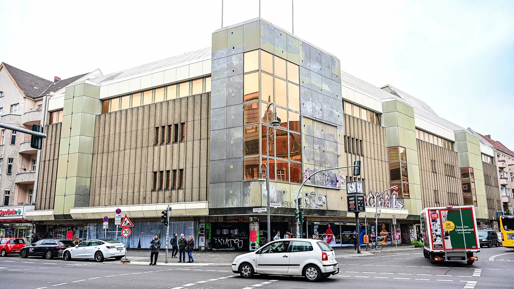
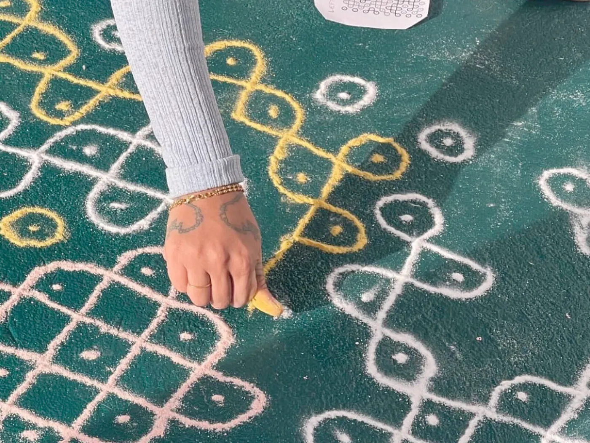
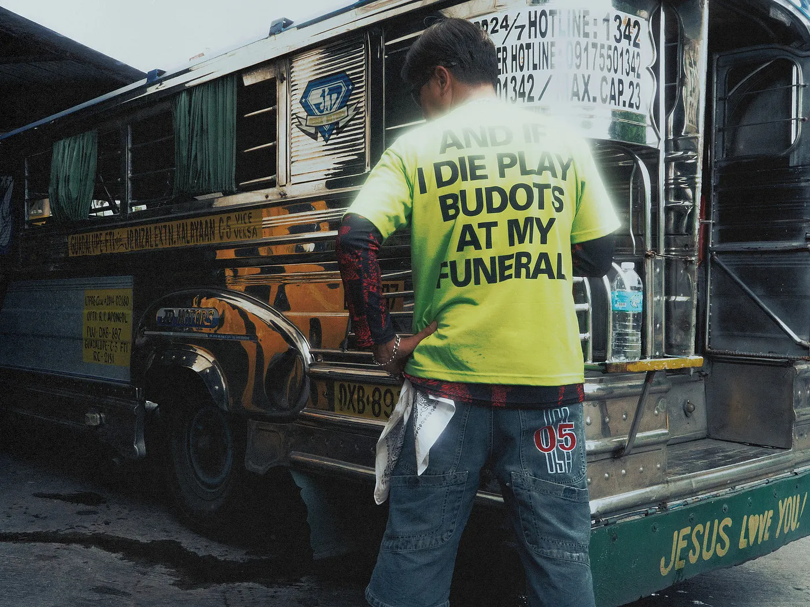
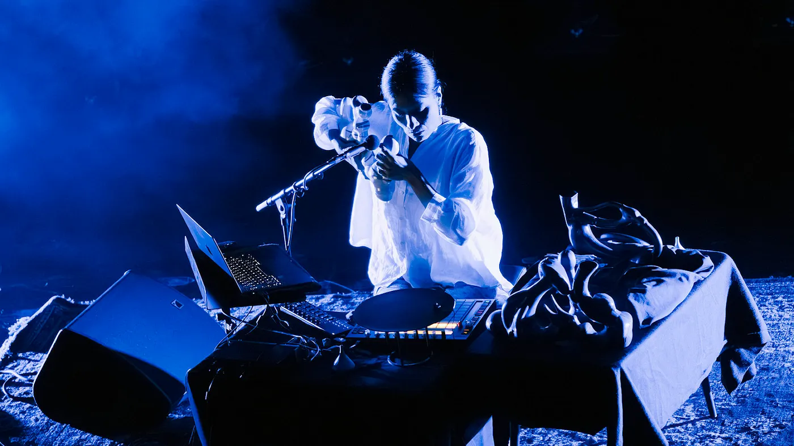
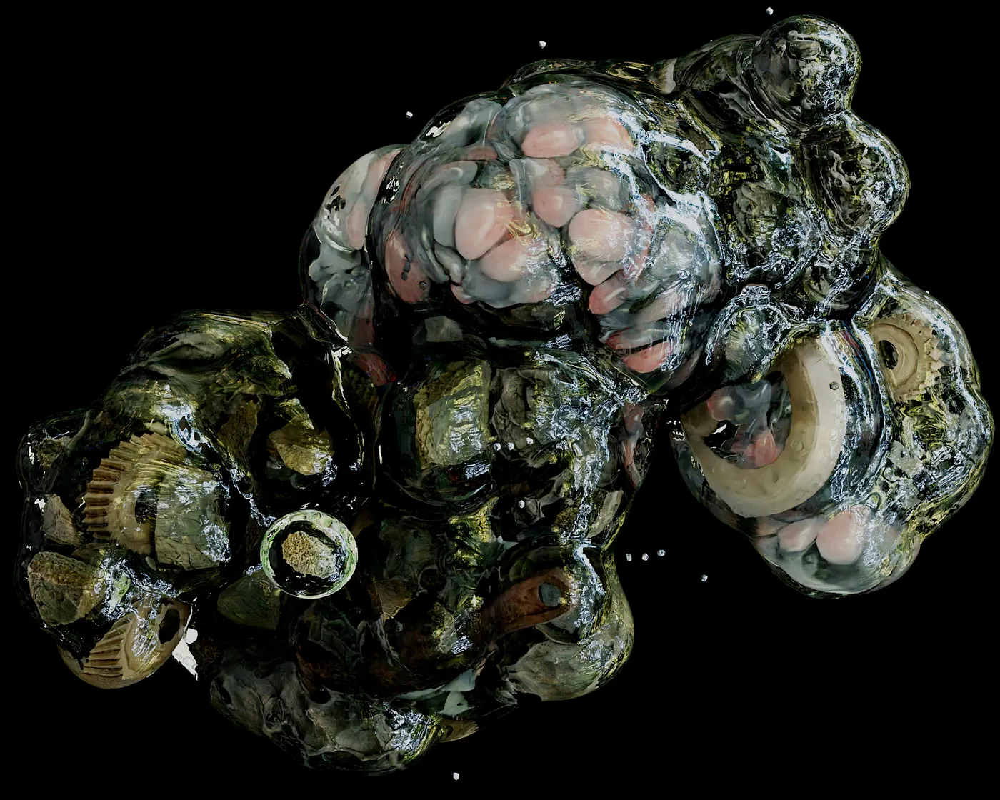

Drop #46 · January 21, 2026 · 13 min read
REINCANTAMENTO's favourite concerts, club nights, workshops and lectures
Hey everyone (▰˘◡˘▰)
A very Berlin-centric DROP. My favourite ten days of Berlin winter are upon us: CTM 2026 “dissonate <> resonate” (27th edition, January 23 – February 1) and transmediale 2026 “By the Mango Belt & Tamarind Road: Compassing, Protocoling, Metaphoring” (39th edition, January 28 – February 1) are about to animate the German capital.
REINCANTAMENTO is pleased to be a media partner of the festivals and to help navigate the vast program of both events. To assist, I have gathered my personal recommendations, including concerts, club nights, workshops, and lectures. Of course, it is a personal list, so something will be missing.
If you’re in town for the festivals, don’t hesitate to get in touch and say hi : ) See y’all around!
A reminder: also in 2026, REINCANTAMENTO is sustained by voluntary work. If you like what we do, consider donating or getting a paid subscription to support what we do!

Haus der Visionäre, January 23rd – Earth + Nataša Grujović & Steve Moore
21:00 - 23:00
The festival opens with drone metal pioneers Earth. Dylan Carlson’s project has stretched across decades from inexorable doom riffs to minimalist ambient country and psychedelic rock: a flagrant dismissal of genre that keeps Carlson’s brooding guitar at the center. For this opening concert, the band will perform their 2005 classic album Hex; Or Printing in the Infernal Method in full. If you know, you know. Support comes from Nataša Grujović & Steve Moore.
P.S. For the early cats, a (now sold-out) screening of the beautifully titled Earth documentary Even Hell Has Its Heroes opens the evening.

Kunstraum Kreuzberg & DAAD Galerie, January 23 – March 22 – “Echoes of Tumult” Exhibition (FREE)
This year, CTM curates the exhibition Echoes of Tumult, alongside DAAD Artists-in-Berlin Program, and iii – instrument inventors initiative. Opening on Friday, the 23rd, the exhibition spans two neighboring venues — Kunstraum Kreuzberg/Bethanien and daadgalerie — and explores artistic elaborations of life in the polycrisis, with works from OG art-(bio)tech explorators Interspecifics, the inventive duo Sissel Marie Tonn and Jonathan Reus, Nikita Kadan, Hoda Afshar, Naomi Rincón-Gallardo, Jaeha Ban & Soyun Park, and more.
Different interventions throughout the festival program will activate the exhibition.
Open until March 22 with free entry.

DAAD Galerie, January 24th – Svitlana Matviyenko Talk
13:00 - 14:00
Ukrainian-Canadian media theorist Svitlana Matviyenko presents her research on “Communicative Militarism” — the merging of commercial and military technologies and strategies. Drawing from her forthcoming book War Diary: Dispatches from the Place of Imminence (Duke UP), Matviyenko reflects on producing war-time subjectivities and the labor of bearing witness from Ukraine. Essential listening for anyone interested in the intersection of sound, urbanism, and violence.
Haus der Visionäre, January 24th – Spatial Radiants
21:00 – 06:00
Haus der Visionäre is the new CTM location, already inaugurated in October with the night Exponential Function, where the festival will present its new club night concept Spatial Radiants. A full-on sensory assault powered by the d&b Soundscape system, XR visuals, synchronized lighting, and immersive sound on the new Ambrio Sound Spatial Mixer.
The artists chosen to give life to this technical assemblage are Blawan, who will live premiere his critically acclaimed (and honestly excellent) debut on XL Recording SickElixir.
I’m curious to hear KAVARI’s horror-inspired, industrial sound and Jensen Interceptor’s metallic electro resonating in those immersive conditions. The rest of the lineup is composed of ophélie, Shapednoise & Sevi Iko Dømochevsky, ∈Y∋ and C.O.L.O, NET GALA, and DJ MELL G.
Radialsystem, January 26th – Fugue Friction
19:00 – 21:00
Very much REINCANTAMENTO territory next Monday.
Belgian musician Lukas de Clerck opens with a solo performance reimagining the aulos — an ancient Greco-Roman double-reed pipe for which no sonic record exists. Working from written archives to create instrument replicas, De Clerck dives into microtonality, psychoacoustics, and abrasive drones. A full cosmology for an ancient yet newly-contemporary instrument.
Later, Dror Feiler’s NO Orchestra will perform No IS. The nine-piece ensemble — featuring Serge modular synth, monochord, turntables, trumpet, saxophone, clavinet, and electronics — creates dense walls of experimental noise while Syrian poet Ghayath Almadhoun speaks over the chaos. His poetry confronts exile, war, and ongoing destruction in Palestine and Syria, refusing to accept catastrophe as normal.
DAAD Galerie, January 27th - Resynthesising the Traditional
14:00 – 18:00 (FREE)
The “Resynthesising the Traditional” artistic lab, hosted by Stas Shärifullá and Yara Mekawei, runs January 26–31 at Radialsystem. This Tuesday’s session offers public insights into the lab’s process. Six fellows selected from an open call engage with aesthetic, discursive, and technological approaches to musical and cultural heritage from contemporary perspectives. The lab is designed as an open toolbox for artists exploring how to (re)connect to ‘the traditional’ outside of (self-)exoticization and uneven power dynamics. Artists range from technological/instrument-focused to compositional, aesthetic, and research-oriented methodologies.
Embassy of Canada, January 27th – Marshall McLuhan Lecture 2026: “The Model is the Message”
18:30 – 21:00 (FREE)
The McLuhan Lecture traditionally forms the prelude to transmediale’s program, featuring Canadian voices in dialogue with the festival’s thematic framework. This year: a pluriversal roundtable without a table on AI sovereignty: the right of nations, peoples, and knowledge systems to build and govern their own models.
Re-wiring root codes through endemic epistemologies. Very much setting the tone for what transmediale 2026 is trying to do this year.
Doors 17:45. Registration here
daadgalerie, January 28th – Social Dissonance: Listening to the Catastrophic Reaction
15:30 – 16:30 (FREE)
Talk by Mattin on his book Social Dissonance. Under capitalism, our miseries and depressions are mined and sold back to us. Germany, where liberal ideas like universalism and formal equality were articulated, is reaching a breaking point. The gap between proclaimed values and material realities becomes untenable.
Can we use noise and improvisation to escape infrastructural determination?
An essential intervention for anyone interested in noise as a political form.
Silent Green, January 28th – transmediale Opening Night
18:00 – 23:45 (FREE)

This year’s edition promises to be structurally fresh. Curated by Neema Githere and Juan Pablo García Sossa, transmediale 2026 moves beyond the typical conference-and-exhibition format toward something more porous and processual. The title — By the Mango Belt & Tamarind Road — situates the festival within the tropical belt, examining how we might rewire the root codes of our technological systems through endemic epistemologies. The program flows between High Tide moments (performances, lectures, concerts) and Low Tide experiences (film screenings, workshops, ritualistic interventions). Central to this approach are the Research Netting Groups — working constellations that have been meeting since October 2025 across Papua New Guinea, Kenya, the Amazon, and Thailand, braiding pluriversal perspectives on computing, archiving, and worlding. A dispersed reimagining of what a festival can be.
The opening evening unfolds across silent green’s spaces. wordsofAzia opens in the Kuppelhalle — French-born artist of Ivorian heritage blending soulful melodies, jazz, and traditional Bhété rhythms, singing alongside her mother Yao Rose.
Interspecifics takes the Betonhalle with “Sonic Grid”: a spatial sound and light performance using a square dome as a physical field of spatialization.
Miss Tacacá closes the night with rhythmic variations from Caribbean genres — calypso, merengue, salsa — merged with Tecnomelody and BregaFunk electronics.
Throughout the venue, we find film screenings by Petna Ndaliko Katondolo, Tianzhuo Chen, Montika Kham-on, and Juan Covelli, intertwined with a durational field recording by KMRU from the highlands of Simbu, Papua New Guinea.

Radialsystem, January 28th – Resonant Circuits
19:00 – 21:00
On Wednesday evening, while transmediale opens at silent green, CTM gives space to emotions, softness, and longing on the other side of the city.
Emiddio Vasquez presents “21s” a live improvised audiovisual performance reanimating the psychogeography of Ayia Napa, Cyprus — once the epicenter of UK Garage. Originally set up to entertain British military staff, Ayia Napa’s club alley becomes the site of a multiyear investigation into UKG mythologies, pirate radio history, and club culture as legitimate renditions of cultural hegemony. Vasquez is joined by drummer Stelios Antoniou, whose sensor-extended kit triggers audiovisual events that dissolve language and push perceptual thresholds.
Sara Persico & Tohal Kyna follow with a fusion of raw noise, experimental vocals, and electronics. Drawing from industrial minimalism, they sculpt distortion and turbulence into tightly controlled intensity. Volatile balance between chaos and precision.
Berghain, January 28th – Dissonance Drift
21:00 - 00:00
The night continues in softer territories. A Berghain program mapping one of my favorite sonic zones from recent years: the crossroads where indie songwriting meets electric distortion.
Milkweed opens with lo-fi folk running inherited forms through experimental circuitry. Detuned guitars, battered tape gear, nursery fragments merging into a slow, glowing line where old rituals meet handmade modernity.
Tony Njoku builds fragile R&B structures that collapse into noise — a soul continuation of the UK hardcore continuum. Whispered falsetto hovering over delicate synths, then suddenly cracking open into distorted bass and metallic rattles.
The night culminates with London’s John Glacier. Her 2024 debut Like a Ribbon was one of the year’s quiet revelations — voice moving between rap and matter-of-fact narration, ambient warmth rubbing against stiff beats, dry humor meeting lyrical weight. Music that turns inward with calm intensity. Very curious to see how it translates live.
Silent Green, January 29th – Current·Seas: Alternate Economies
15:30 – 17:00
The daytime at silent green offers transmediale’s discourse program in full flow (the High Tide moments).
This conversational panel brings together Gladys Kalichini, Nat Skoczylas, and Huang Po-Chih to explore alternate economic practices shaped by circulation, trust, and collective rhythm.
Kalichini’s work draws from rotating savings associations across the Global South — SuSu, Chilimba, Chitty, Arisan. In Zambia, Chilimba names both a communal savings pot and a radio — economic and sonic channels sustaining networks of relation.
The day at silent green also includes: Kidus Hailesilassie presenting his “6,500 Alphabets Make a Map” installation (12:00), the durational sound session “All Water Touches Water Everywhere” (13:00), a screening of Saul Williams and Anisia Uzeyman’s Afrofuturist musical Neptune Frost (15:30), and Rochelle Webster Nembhard’s lecture-performance “Dissociative Worldmaking” (16:30).
The day program will unfold at silent green for the rest of the weekend. You can check it here. But expect surprises: “In line with the process-oriented approach of the 2026 festival, the programme will continue to unfold in the lead up to the festival days”.

CANK, January 29th – High Tide Evening
18:00 - 23:00
transmediale activates its new Neukölln venue for an evening of installations and sound.
CANK — a former C&A department store on Karl-Marx-Straße, transformed into a 10,000 sqm art space across five floors.
The evening features installations by Saba Arat, Aarati Akkapeddi, Simon Speiser, Kasra Jalilipour, Guely Morató Loredo, and Miguel Buenrostro and DJ sets by Hanaby — Berlin-based, blending African riddims and Dancehall with Jersey club, Footwork, and Techno — and Zufu, one half of Dengue Dengue Dengue.

Berghain, January 29th
22:00 - 06:00
One mammoth of a night.
This year, Berghain’s Säule floor hosts the encounter of transmediale and CTM: sonic currents converge in the Intertropical Convergence Zone.
Berlin’s subterranean chamber is inaugurated by Microhm (Leslie García of Interspecifics), opening with slow-burning rituals. Dengue Dengue Dengue brings psychedelic club mutations, treating cumbia, dub, and bass music like elastic neon. DJ Love delivers budots, Philippine’s favourite dance craziness, at breakneck pace, with heavy bass, flying whistles, street-born sound effects, and cheeky rhythmic collisions. Lagos’ Aunty Rayzor storms with a jagged blend of rap and electronic abrasion, and Clementaum closes as “Overall Princess Harpya,” with pulsing, bright, high-speed mosaics.

Upstairs, Berghain hosts, among others, Pain Magazine’s post-hardcore, jagged reflections, and a lethal back-to-back between two of Berlin’s best DJ Marylou and Fukinsei, folding traditional music, improvised jazz, noise, footwork, jungle, and breakcore into dreamlit sequences.
Panorama Bar will be shaken by Afrofuturist maestro Guedra Guedra, Valesuchi’s idiosyncratic techno, and DJ Chad’s juke and footwork rhythms.
Radialsystem, January 30th – CTM × Resident Advisor Conference
12:00 – 18:00 (FREE with registration)
If this program was not already rich enough, CTM teamed up with Resident Advisor for a free one-day conference on the future of independent electronic music communities. Artists, organizers, technologists, venue operators, and cultural workers are examining how global scenes respond to mounting pressure from platform monopolies, venue closures, political instability, and economic precarity.
The lineup of speakers alone: Assyouti, Anthea Caddy, Chloe Lula, Gabriel Szatan, Lena Brecht, Louisahhh, Rabih Beaini, Maria W Horn, Sam Slater, Shapednoise, and more. Conversations on how independent communities are adapting their practices under increasing economic, political, and infrastructural tension.
Opening the conference is the world premiere of Stefanie Egedy’s “Sonic Energetics”, a shared coping ritual for overstimulated times.
Essential if you work in this world. Or care about its survival.
Silent Green, January 30th – Transhemispheric Resonances (transmediale × CTM)
20:30 – 23:00
The sister festivals come together again for an evening of trans-hemispheric conversation.
Nursalim Yadi Anugerah invokes the kadedek — the bamboo mouth-organ of West Kalimantan, Borneo — whose layered breaths carry forest memory, ecological fragility, and communal ritual.
A simultaneous, hypnotic, drone-based approach reflecting social and environmental challenges in Kalimantan — questions of exploitation, suffering, and tensions between nature and machines.
Vica Pacheco bridges animism, ritual, and technology through ceramic instruments and hybrid sonic devices. Drawing from pre-Columbian Mesoamerican whistling vessels — ceramics that produce sound using air and water — she’s developed hydraulic ceramic sculptures exploring breath, organicity, and the interplay between ancient and contemporary technologies. If everything is alive, dialogue must move beyond words into affect, vibration, and breath.
Worldmaking across distance and difference.

Radialsystem, January 31st – Disturbed Ground
19:00 – 21:00
Heavy, necessary, and urgent.
Disturbed Ground is a collaboration between CTM and Kyiv’s ∄, bringing together Ukrainian and international artists to create new audiovisual works responding to the ecological consequences of war in Ukraine, specifically how the force of war imprints itself into land.
The centerpiece is “The Core” by Khrystyna Kirik and Mark Bain. Using seismic data recorded during missile strikes in Kharkiv and Kherson, environmental phenomena like earthquakes, and daily baseline readings from Poltava, they translate violence into vibration and sound. Inaudible yet physically impactful low-frequency waves, sonic winds, dense drones, voice, and high-frequency textures. What does the land feel, and can we learn to feel with it?
“Heavy Waters” by undo despot, Zeynep Schilling, and alen hast + myk rudik explores the layered life of Ukrainian rivers: their transformation from mythical entities and life-giving sources to industrial assets to sites deeply affected by war.

RSO.Berlin, January 31st – Oroko Radio × CTM + Terminal
22:00 – 08:00
Another club night spanning global sounds, this time banging from RSO’s bombastic soundsystem. Ghana’s Oroko Radio takes the club’s main floor: a not-for-profit project braiding local Accra scenes with global diasporic flows.
I’m looking forward to listening to Jay Mitta × Anti Vairas and their Singeli from Dar es Salaam at blistering speed.
The Summe floor is hosted by Mexico’s Terminal collective, with a never-to-be-missed set by none other than raptor house’s Archimedes aka Dj Babatr.
Just come and dance your ass off.
Volksbühne, February 1st – Cadence of Shadows (CTM Closing Concert)
20:00 – 22:00
Dulcis in fundo, a night at the theater. CTM closes at Volksbühne with Sam Slater’s live premiere of “Lunng”: heavy experimental electronics and layered sound design meeting lights by Theresa Baumgartner and visuals by Lukas Feigelfeld. They will be joined by guests of the likes of Hildur Guðnadóttir (yes, that Hildur, the one behind Joker and Chernobyl soundtracks).
Emma Ruth Rundle is the last act of the festival. A restless spirit at the edges of doom-folk and ambient existentialism, drawn into shadow and myth.